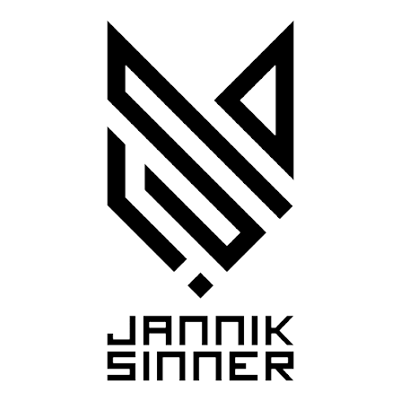

Sinner vs Alexander Zverev
Finale · Centre Court · Erba

CalendarCOME FUNZIONA ↘IL CALENDARIO DI JANNIK, SEMPRE AGGIORNATO
Partite ufficiali, orari italiani, risultati e copertura TV. Si aggiorna automaticamente: tu devi solo aggiungerlo.
PROSSIMA PARTITA
In attesa dell’ordine di gioco ufficiale
Avversario, turno, campo e orario appariranno qui solo dopo una conferma ufficiale.
RISULTATI RECENTI · FONTE ATP TOUR
Finale · Centre Court · Erba
Semifinale · Centre Court · Erba
Quarti · Court 1 · Erba
Ottavi · Centre Court · Erba
Secondo turno · Centre Court · Erba
Primo turno · Centre Court · Erba
DOVE VEDERLO
ORF 1 Da confermare
ORF SPORT+ Da confermare
ORF ON Da confermare
ServusTV / On Da confermare
Rai / RaiPlay Da confermare
SuperTennis Da confermare
Sky Sport Da confermare
NOW Da confermare
UNA VOLTA SOLA
Aggiungi l’unico calendario alla tua app preferita.
Orari, avversari e risultati cambiano sullo stesso evento.
Promemoria 24 ore e 60 minuti prima del match.